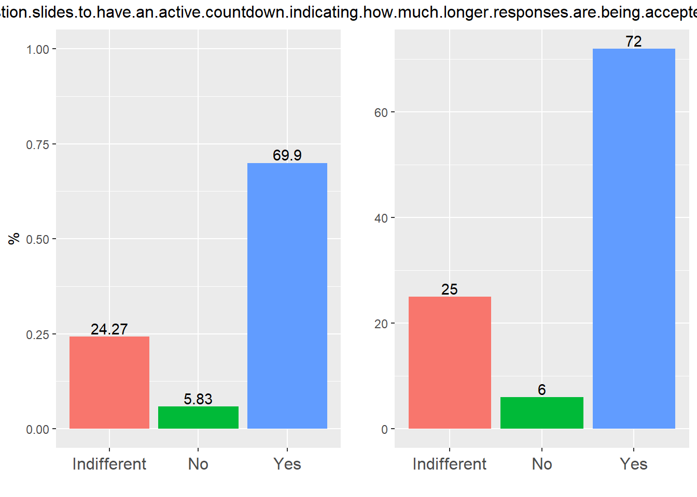
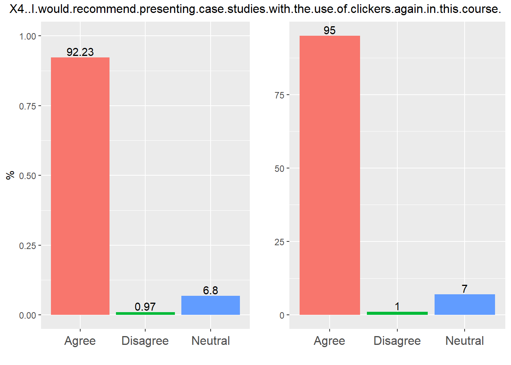
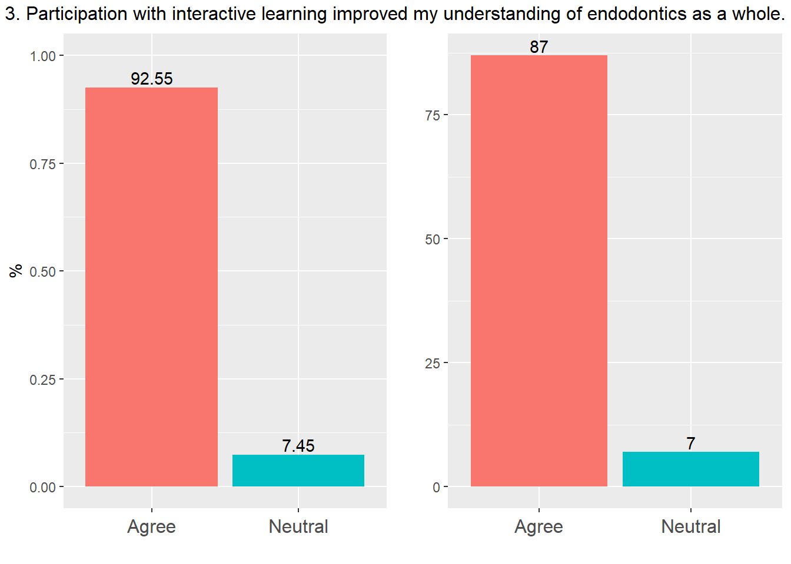

2/24/2022
Last updated: 2024-05-10
Checks: 5 2
Knit directory: Collaborations/
This reproducible R Markdown analysis was created with workflowr (version 1.7.1). The Checks tab describes the reproducibility checks that were applied when the results were created. The Past versions tab lists the development history.
The R Markdown file has unstaged changes. To know which version of
the R Markdown file created these results, you’ll want to first commit
it to the Git repo. If you’re still working on the analysis, you can
ignore this warning. When you’re finished, you can run
wflow_publish to commit the R Markdown file and build the
HTML.
Great job! The global environment was empty. Objects defined in the global environment can affect the analysis in your R Markdown file in unknown ways. For reproduciblity it’s best to always run the code in an empty environment.
The command set.seed(20210523) was run prior to running
the code in the R Markdown file. Setting a seed ensures that any results
that rely on randomness, e.g. subsampling or permutations, are
reproducible.
Great job! Recording the operating system, R version, and package versions is critical for reproducibility.
Nice! There were no cached chunks for this analysis, so you can be confident that you successfully produced the results during this run.
Using absolute paths to the files within your workflowr project makes it difficult for you and others to run your code on a different machine. Change the absolute path(s) below to the suggested relative path(s) to make your code more reproducible.
| absolute | relative |
|---|---|
| C:/Shengtong/Research/AllCollaboration/Collaborations/analysis/Rfunctions.R | analysis/Rfunctions.R |
Great! You are using Git for version control. Tracking code development and connecting the code version to the results is critical for reproducibility.
The results in this page were generated with repository version e177dfd. See the Past versions tab to see a history of the changes made to the R Markdown and HTML files.
Note that you need to be careful to ensure that all relevant files for
the analysis have been committed to Git prior to generating the results
(you can use wflow_publish or
wflow_git_commit). workflowr only checks the R Markdown
file, but you know if there are other scripts or data files that it
depends on. Below is the status of the Git repository when the results
were generated:
Ignored files:
Ignored: .Rhistory
Ignored: analysis/.Rhistory
Ignored: analysis/2022_Mar2_Marinho_cache/
Unstaged changes:
Modified: analysis/2022_Feb5_Lauren.Rmd
Note that any generated files, e.g. HTML, png, CSS, etc., are not included in this status report because it is ok for generated content to have uncommitted changes.
These are the previous versions of the repository in which changes were
made to the R Markdown (analysis/2022_Feb5_Lauren.Rmd) and
HTML (docs/2022_Feb5_Lauren.html) files. If you’ve
configured a remote Git repository (see ?wflow_git_remote),
click on the hyperlinks in the table below to view the files as they
were in that past version.
| File | Version | Author | Date | Message |
|---|---|---|---|---|
| Rmd | e177dfd | han | 2024-05-09 | 5/9/2024 |
| html | e177dfd | han | 2024-05-09 | 5/9/2024 |
| Rmd | bfcde72 | han | 2024-02-08 | 2/8/2024 |
| html | bfcde72 | han | 2024-02-08 | 2/8/2024 |
| Rmd | 9f17e01 | han | 2024-02-06 | 2/6/2024 |
| html | 9f17e01 | han | 2024-02-06 | 2/6/2024 |
| Rmd | a81c1e3 | han | 2024-02-02 | 2/2/2024 |
| html | a81c1e3 | han | 2024-02-02 | 2/2/2024 |
| Rmd | ee233a8 | Han | 2022-06-20 | 6/20/2022 |
| html | ee233a8 | Han | 2022-06-20 | 6/20/2022 |
| Rmd | 17f38c5 | Han | 2022-05-19 | 5/19/2022 |
| html | 17f38c5 | Han | 2022-05-19 | 5/19/2022 |
| Rmd | e2c7c32 | Han | 2022-05-19 | 5/19/2022 |
| html | e2c7c32 | Han | 2022-05-19 | 5/19/2022 |
| Rmd | 4cba0c9 | Han | 2022-05-17 | 5/17/2022 |
| Rmd | 3f08129 | Han | 2022-05-16 | 5/16/2022 |
| html | 3f08129 | Han | 2022-05-16 | 5/16/2022 |
section 1
Disagree Neutral Agree
Disagree NA 0.1795654 6.167247e-22
Neutral NA NA 5.521267e-17
Agree NA NA NA
Neutral Agree
Neutral NA 1.363405e-11
Agree NA NAbinomial exact test is used to test if pairwise occurrence rate is equal or not
pairwise p values are shown in matrix, for instance p value between
DisagreeandNeutralis 0.1796.
section 2
No Indifferent Yes
No NA 0.1077521 1.523583e-15
Indifferent NA NA 1.641548e-10
Yes NA NA NA
No Indifferent Yes
No NA 1.513833e-09 1.697968e-12
Indifferent NA NA 3.148799e-01
Yes NA NA NA
No Indifferent Yes
No NA 0.0008779103 1.849366e-15
Indifferent NA NA 1.918739e-06
Yes NA NA NA
Indifferent Yes
Indifferent NA 4.207683e-21
Yes NA NA
| Version | Author | Date |
|---|---|---|
| e2c7c32 | Han | 2022-05-19 |
15 to 30 seconds 30 to 60 seconds 60+ seconds
15 to 30 seconds NA 4.757482e-07 1.067384e-02
30 to 60 seconds NA NA 5.375096e-14
60+ seconds NA NA NA
| Version | Author | Date |
|---|---|---|
| e2c7c32 | Han | 2022-05-19 |
Less than 3 minutes 3 to 5 minutes 5 to 7 minutes
Less than 3 minutes NA 5.645557e-12 7.841572e-07
3 to 5 minutes NA NA 4.701156e-02
5 to 7 minutes NA NA NA
7 to 10 minutes NA NA NA
7 to 10 minutes
Less than 3 minutes 1.000000e+00
3 to 5 minutes 2.972585e-11
5 to 7 minutes 2.828878e-06
7 to 10 minutes NAsection 3
Disagree Neutral Agree
Disagree NA 1.233129e-07 1.857035e-16
Neutral NA NA 1.789930e-03
Agree NA NA NA
Disagree Neutral Agree
Disagree NA 0.001489639 5.295300e-21
Neutral NA NA 6.147807e-11
Agree NA NA NA
Disagree Neutral Agree
Disagree NA 0.1184692 1.18100e-21
Neutral NA NA 4.52958e-16
Agree NA NA NA
Disagree Neutral Agree
Disagree NA 0.21875 6.247778e-28
Neutral NA NA 3.459873e-23
Agree NA NA NA
Disagree Neutral Agree
Disagree NA 0.01667385 9.708115e-12
Neutral NA NA 9.375635e-06
Agree NA NA NAsection 4
Disagree Neutral Agree
Disagree NA 0.003417969 7.431701e-26
Neutral NA NA 6.125403e-16
Agree NA NA NA
Disagree Neutral Agree
Disagree NA 0.001831055 1.470184e-25
Neutral NA NA 4.301654e-15
Agree NA NA NA
Disagree Neutral Agree
Disagree NA 4.176982e-07 5.057803e-17
Neutral NA NA 4.087772e-04
Agree NA NA NA
Disagree Neutral Agree
Disagree NA 0.0703125 2.448624e-27
Neutral NA NA 7.849647e-21
Agree NA NA NA
No Yes
No NA 5.109797e-20
Yes NA NA2024
section 1
| Version | Author | Date |
|---|---|---|
| 9f17e01 | han | 2024-02-06 |
Disagree Neutral Agree
Disagree NA 0.0006855642 0.18821620
Neutral NA NA 0.04876677
Agree NA NA NA
| Version | Author | Date |
|---|---|---|
| 9f17e01 | han | 2024-02-06 |
Disagree Neutral Agree
Disagree NA 0.007385254 1.113425e-18
Neutral NA NA 1.333319e-10
Agree NA NA NA
| Version | Author | Date |
|---|---|---|
| 9f17e01 | han | 2024-02-06 |
Disagree Neutral Agree
Disagree NA 3.5882e-05 4.373672e-16
Neutral NA NA 2.180657e-05
Agree NA NA NAsection 2
| Version | Author | Date |
|---|---|---|
| 9f17e01 | han | 2024-02-06 |
No Indifferent Yes
No NA 0.001193243 2.716853e-08
Indifferent NA NA 2.203346e-02
Yes NA NA NA
| Version | Author | Date |
|---|---|---|
| 9f17e01 | han | 2024-02-06 |
No Indifferent Yes
No NA 5.417769e-07 3.102804e-07
Indifferent NA NA 1.000000e+00
Yes NA NA NA
| Version | Author | Date |
|---|---|---|
| 9f17e01 | han | 2024-02-06 |
No Indifferent Yes
No NA 0.04703103 3.183629e-06
Indifferent NA NA 9.542211e-03
Yes NA NA NA
| Version | Author | Date |
|---|---|---|
| 9f17e01 | han | 2024-02-06 |
No Indifferent Yes
No NA 0.007385254 1.113425e-18
Indifferent NA NA 1.333319e-10
Yes NA NA NA
| Version | Author | Date |
|---|---|---|
| 9f17e01 | han | 2024-02-06 |
15 to 30 seconds 30 to 60 seconds Longer than 60 seconds
15 to 30 seconds NA 0.1192737 1.084394e-06
30 to 60 seconds NA NA 1.306528e-10
Longer than 60 seconds NA NA NA
| Version | Author | Date |
|---|---|---|
| 9f17e01 | han | 2024-02-06 |
Less than 3 minutes Between 3 to 5 minutes
Less than 3 minutes NA 2.571572e-07
Between 3 to 5 minutes NA NA
Between 5 to 7 minutes NA NA
Between 7 to 10 minutes NA NA
Between 5 to 7 minutes Between 7 to 10 minutes
Less than 3 minutes 0.013530987 4.239502e-01
Between 3 to 5 minutes 0.008554539 1.284823e-09
Between 5 to 7 minutes NA 5.461127e-04
Between 7 to 10 minutes NA NAsection 3
| Version | Author | Date |
|---|---|---|
| 9f17e01 | han | 2024-02-06 |
Disagree Neutral Agree
Disagree NA 1.636124e-06 1.008748e-07
Neutral NA NA 6.529644e-01
Agree NA NA NA
| Version | Author | Date |
|---|---|---|
| 9f17e01 | han | 2024-02-06 |
Disagree Neutral Agree
Disagree NA 0.002599478 2.083544e-14
Neutral NA NA 1.773068e-06
Agree NA NA NA
| Version | Author | Date |
|---|---|---|
| 9f17e01 | han | 2024-02-06 |
Disagree Neutral Agree
Disagree NA 0.0005187988 1.202787e-19
Neutral NA NA 1.938192e-09
Agree NA NA NA
| Version | Author | Date |
|---|---|---|
| 9f17e01 | han | 2024-02-06 |
Disagree Neutral Agree
Disagree NA 0.625 3.432800e-23
Neutral NA NA 1.022137e-20
Agree NA NA NA
| Version | Author | Date |
|---|---|---|
| 9f17e01 | han | 2024-02-06 |
Disagree Neutral Agree
Disagree NA 0.6177193 5.084767e-05
Neutral NA NA 6.361730e-04
Agree NA NA NAsection 4
| Version | Author | Date |
|---|---|---|
| 9f17e01 | han | 2024-02-06 |
Disagree Neutral Agree
Disagree NA 0.0003107488 2.591759e-13
Neutral NA NA 1.266112e-04
Agree NA NA NA
| Version | Author | Date |
|---|---|---|
| 9f17e01 | han | 2024-02-06 |
Disagree Neutral Agree
Disagree NA 3.5882e-05 4.373672e-16
Neutral NA NA 2.180657e-05
Agree NA NA NA
| Version | Author | Date |
|---|---|---|
| 9f17e01 | han | 2024-02-06 |
Disagree Neutral Agree
Disagree NA 0.0237027 8.219664e-06
Neutral NA NA 3.441591e-02
Agree NA NA NA
| Version | Author | Date |
|---|---|---|
| 9f17e01 | han | 2024-02-06 |
Neutral Agree
Neutral NA 4.628574e-11
Agree NA NA
| Version | Author | Date |
|---|---|---|
| 9f17e01 | han | 2024-02-06 |
No Yes
No NA 2.427174e-10
Yes NA NA6. If you answered YES to question 5, please select which additional topics you would like to see covered to improve your knowledge of advanced clinical endo. Select ALL that apply.
2025
section 1
| Version | Author | Date |
|---|---|---|
| 9f17e01 | han | 2024-02-06 |
Disagree Neutral Agree
Disagree NA 0.002186243 0.01861775
Neutral NA NA 0.56006463
Agree NA NA NA
| Version | Author | Date |
|---|---|---|
| 9f17e01 | han | 2024-02-06 |
Neutral Agree
Neutral NA 8.807937e-20
Agree NA NA
| Version | Author | Date |
|---|---|---|
| 9f17e01 | han | 2024-02-06 |
Neutral Agree
Neutral NA 1.121638e-18
Agree NA NAsection 2
| Version | Author | Date |
|---|---|---|
| 9f17e01 | han | 2024-02-06 |
No Yes
No NA 0.0001111206
Yes NA NA
| Version | Author | Date |
|---|---|---|
| 9f17e01 | han | 2024-02-06 |
No Yes
No NA 2.260598e-07
Yes NA NA
| Version | Author | Date |
|---|---|---|
| 9f17e01 | han | 2024-02-06 |
No Yes
No NA 5.622369e-14
Yes NA NA
| Version | Author | Date |
|---|---|---|
| 9f17e01 | han | 2024-02-06 |
No Yes
No NA 0.0002616832
Yes NA NA
| Version | Author | Date |
|---|---|---|
| 9f17e01 | han | 2024-02-06 |
No Indifferent Yes
No NA 2.54486e-05 1.570262e-08
Indifferent NA NA 1.605784e-01
Yes NA NA NA
| Version | Author | Date |
|---|---|---|
| 9f17e01 | han | 2024-02-06 |
No Indifferent Yes
No NA 1.170292e-10 2.499510e-07
Indifferent NA NA 2.031168e-01
Yes NA NA NA
| Version | Author | Date |
|---|---|---|
| 9f17e01 | han | 2024-02-06 |
No Indifferent Yes
No NA 0.0002685401 0.0001751267
Indifferent NA NA 1.0000000000
Yes NA NA NA
| Version | Author | Date |
|---|---|---|
| 9f17e01 | han | 2024-02-06 |
No Indifferent Yes
No NA 0.004425049 5.238237e-19
Indifferent NA NA 2.651717e-10
Yes NA NA NA
| Version | Author | Date |
|---|---|---|
| 9f17e01 | han | 2024-02-06 |
15 to 30 seconds 30 to 60 seconds Longer than 60 seconds
15 to 30 seconds NA 7.255748e-14 3.719166e-03
30 to 60 seconds NA NA 2.879391e-06
Longer than 60 seconds NA NA NA
| Version | Author | Date |
|---|---|---|
| 9f17e01 | han | 2024-02-06 |
Less than 3 minutes Between 3 to 5 minutes
Less than 3 minutes NA 1.951909e-05
Between 3 to 5 minutes NA NA
Between 5 to 7 minutes NA NA
Between 5 to 7 minutes
Less than 3 minutes 6.177193e-01
Between 3 to 5 minutes 9.674891e-07
Between 5 to 7 minutes NAsection 3
| Version | Author | Date |
|---|---|---|
| bfcde72 | han | 2024-02-08 |
Disagree Neutral Agree
Disagree NA 1.096725e-05 1.567011e-20
Neutral NA NA 1.038719e-07
Agree NA NA NA
| Version | Author | Date |
|---|---|---|
| bfcde72 | han | 2024-02-08 |
Disagree Neutral Agree
Disagree NA 5.947612e-05 5.873991e-15
Neutral NA NA 7.657073e-05
Agree NA NA NA
| Version | Author | Date |
|---|---|---|
| bfcde72 | han | 2024-02-08 |
Disagree Neutral Agree
Disagree NA 0.001312256 2.039497e-20
Neutral NA NA 1.599715e-10
Agree NA NA NA
| Version | Author | Date |
|---|---|---|
| bfcde72 | han | 2024-02-08 |
Disagree Neutral Agree
Disagree NA 0.0390625 2.248897e-24
Neutral NA NA 2.264494e-17
Agree NA NA NA
| Version | Author | Date |
|---|---|---|
| bfcde72 | han | 2024-02-08 |
Disagree Neutral Agree
Disagree NA 0.05761267 2.633329e-09
Neutral NA NA 5.973596e-05
Agree NA NA NAsection 4
| Version | Author | Date |
|---|---|---|
| bfcde72 | han | 2024-02-08 |
Disagree Neutral Agree
Disagree NA 0.1153183 5.396645e-16
Neutral NA NA 5.089194e-11
Agree NA NA NA
| Version | Author | Date |
|---|---|---|
| bfcde72 | han | 2024-02-08 |
Neutral Agree
Neutral NA 1.150544e-11
Agree NA NA
| Version | Author | Date |
|---|---|---|
| bfcde72 | han | 2024-02-08 |
Neutral Agree
Neutral NA 0.001261387
Agree NA NA
| Version | Author | Date |
|---|---|---|
| bfcde72 | han | 2024-02-08 |
Neutral Agree
Neutral NA 5.622369e-14
Agree NA NA
| Version | Author | Date |
|---|---|---|
| bfcde72 | han | 2024-02-08 |
No Yes
No NA 1.398594e-23
Yes NA NA7. If you said yes to question 6, please select or write which topics you might like covered to improve clinical experience in endo.
year comparisons
- two sample proportion test was used.
statistical software
_
platform x86_64-w64-mingw32
arch x86_64
os mingw32
crt ucrt
system x86_64, mingw32
status
major 4
minor 3.2
year 2023
month 10
day 31
svn rev 85441
language R
version.string R version 4.3.2 (2023-10-31 ucrt)
nickname Eye Holes
sessionInfo()R version 4.3.2 (2023-10-31 ucrt)
Platform: x86_64-w64-mingw32/x64 (64-bit)
Running under: Windows 10 x64 (build 19045)
Matrix products: default
locale:
[1] LC_COLLATE=English_United States.utf8
[2] LC_CTYPE=English_United States.utf8
[3] LC_MONETARY=English_United States.utf8
[4] LC_NUMERIC=C
[5] LC_TIME=English_United States.utf8
time zone: America/Chicago
tzcode source: internal
attached base packages:
[1] grid stats graphics grDevices utils datasets methods
[8] base
other attached packages:
[1] VennDiagram_1.7.3 futile.logger_1.4.3 condsurv_1.0.0
[4] devtools_2.4.5 usethis_2.2.2 tidycmprsk_1.0.0
[7] gtsummary_1.7.2 ggsurvfit_1.0.0 irr_0.84.1
[10] lpSolve_5.6.20 readxl_1.4.3 cowplot_1.1.2
[13] matrixStats_1.2.0 gridExtra_2.3 DT_0.31
[16] rstatix_0.7.2 ggpubr_0.6.0 kableExtra_1.3.4
[19] lubridate_1.9.3 forcats_1.0.0 stringr_1.5.1
[22] dplyr_1.1.4 purrr_1.0.2 readr_2.1.4
[25] tidyr_1.3.0 tibble_3.2.1 ggplot2_3.4.4
[28] tidyverse_2.0.0
loaded via a namespace (and not attached):
[1] formatR_1.14 remotes_2.4.2.1 rlang_1.1.2
[4] magrittr_2.0.3 git2r_0.33.0 compiler_4.3.2
[7] systemfonts_1.0.5 vctrs_0.6.5 rvest_1.0.3
[10] profvis_0.3.8 pkgconfig_2.0.3 fastmap_1.1.1
[13] backports_1.4.1 ellipsis_0.3.2 labeling_0.4.3
[16] utf8_1.2.4 promises_1.2.1 rmarkdown_2.25
[19] sessioninfo_1.2.2 tzdb_0.4.0 xfun_0.41
[22] cachem_1.0.8 jsonlite_1.8.8 highr_0.10
[25] later_1.3.2 broom_1.0.5 R6_2.5.1
[28] bslib_0.6.1 stringi_1.8.3 car_3.1-2
[31] pkgload_1.3.3 jquerylib_0.1.4 cellranger_1.1.0
[34] Rcpp_1.0.11 knitr_1.45 httpuv_1.6.13
[37] Matrix_1.6-1.1 splines_4.3.2 timechange_0.2.0
[40] tidyselect_1.2.0 rstudioapi_0.15.0 abind_1.4-5
[43] yaml_2.3.8 miniUI_0.1.1.1 pkgbuild_1.4.3
[46] lattice_0.21-9 shiny_1.8.0 withr_2.5.2
[49] evaluate_0.23 lambda.r_1.2.4 survival_3.5-7
[52] urlchecker_1.0.1 xml2_1.3.6 pillar_1.9.0
[55] carData_3.0-5 whisker_0.4.1 generics_0.1.3
[58] rprojroot_2.0.4 hms_1.1.3 munsell_0.5.0
[61] scales_1.3.0 xtable_1.8-4 glue_1.6.2
[64] tools_4.3.2 webshot_0.5.5 ggsignif_0.6.4
[67] fs_1.6.3 crosstalk_1.2.1 colorspace_2.1-0
[70] cli_3.6.2 workflowr_1.7.1 futile.options_1.0.1
[73] fansi_1.0.6 broom.helpers_1.14.0 viridisLite_0.4.2
[76] svglite_2.1.3 gt_0.10.0 gtable_0.3.4
[79] sass_0.4.8 digest_0.6.33 farver_2.1.1
[82] htmlwidgets_1.6.4 memoise_2.0.1 htmltools_0.5.7
[85] lifecycle_1.0.4 httr_1.4.7 mime_0.12